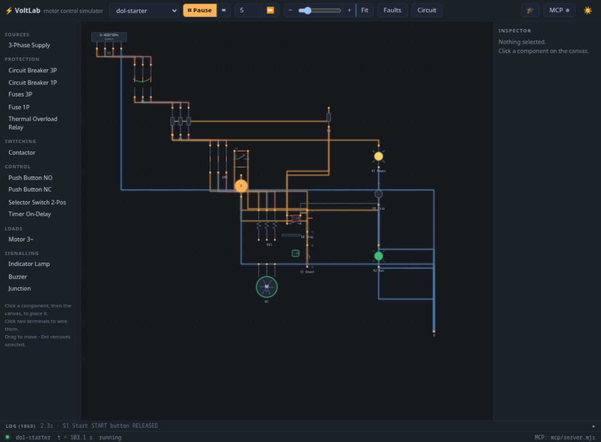

Motor control circuit simulator
Wire it. Run it. Break it.


Wire it. Run it. Break it.
Let an agent drive it.
VoltLab simulates electromechanical motor-control circuits — DOL starters, interlocks, timers, reversing starters, even a 10-story relay elevator — with a real per-tick electrical solver and IEC-style schematics. And because it speaks MCP, an LLM agent can build, wire, fault and document every circuit for you.
